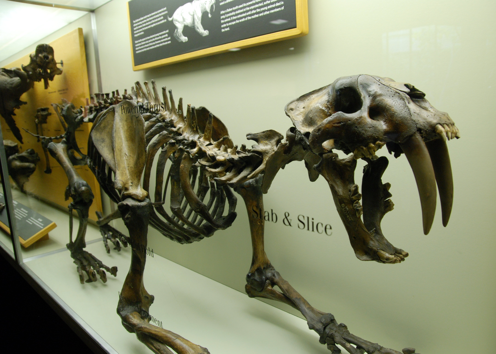

SMILODON
GRUPO=mamifero,placentario,felido"felinos"
DATACION=plioceno
TAMAÑO=12,3 m de largo,6-8 toneladas
LOCALIZACION=norteamerica y sudamerica
su nombre viene del griego antiguo, "smile"significa escarpelo o cuclilla de doble hoja y "odous" diente, conocidos como tigres dientes de sable,
sin embargo son especies totalmete distintas del tigre actual, aperecio en america del norte a finales del plioceno y se expandio hasta america del sur durante el suceso conocido como"gran intercambio biotico americano". habitaba planicies,Pesaba 300kg,tenia buen olfato,pero era mas lento que los grandes felinos actuales,sus garras eran retractiles y 2 grandes caninos de 20cm cada uno, machos y hembras las tenian por igual, las ultilizaban para morder el cuello de sus presas, bloqueandoles el flujo respitatorio por la traquea y cortandoles la pricipales arterias que irrigaban el cerebro,mientras la mantenia quieta .
 i
Aunque su mordida era mas debil"con el tercio de la fuerza de la mordida del leon" podia abrir la boca a un angulo de 120 grados y el leon solo puede a 65 grados.
estaba especializado en atrapar presas grandes,como bisotes,alces,ciervos,camellos americanos,perezosos gigantes,crias de mamut y mastodontes,andaban en grupos, compuesto 1 a 2 machos dominantes,varias hembras,crias y machos mas jovenes,los machos combatirian por conseguir una posicion de dominacion o para expulsar al macho dominante,se piensa que cuidaban a sus compañeros heridos y compartian el alimento con ellos
VOLVER